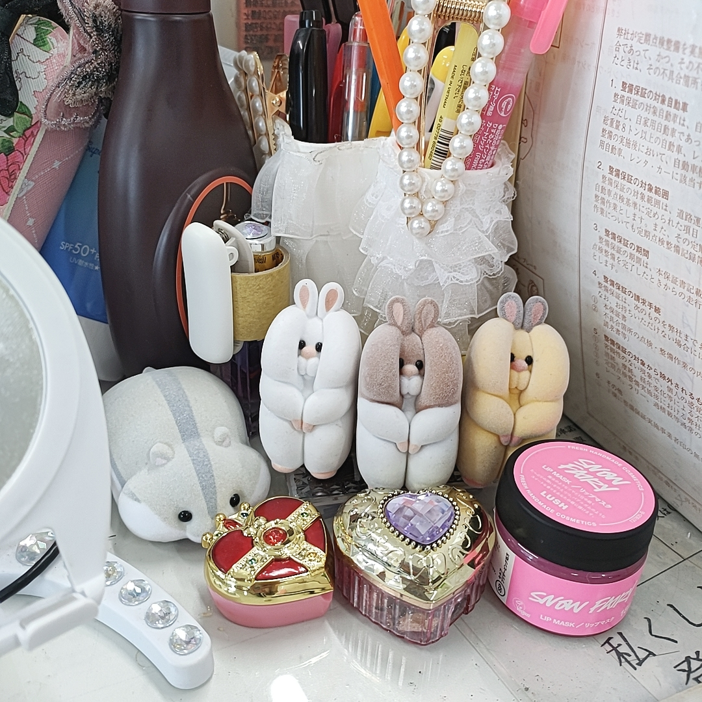

2024/05/24☔
職場のオアシス🌈💕
私の職場の癒しスペースをご紹介💕💕💕
KAWAIIが集合しているスペースです✨✨
左の白い子から順に”むぎゅ”と”おっちょん”と”むーちょ”です！一番左のハムスターは卓上クリーナーです！

失敗の常習犯なので、落ち込んだ時に見つめると頑張れます🌞✨✨
今日のお昼も松茸のお吸い物と豆腐300ｇとヨーグルト75ｇです！
夜も豆腐で頑張りましたよ😊
今日のお昼前、空が激怒してましたね！！
私、車庫を取りに警察署まで外出中で、出先でずぶ濡れになりましたが、幸い乾きやすい素材の衣類だったので職場に戻るまでには乾いて元通りでした😊さすがラッキーガールむに💕
今週もよく頑張った👍✨✨
週末は片付少しでもしたいな～という希望をもって今日も頑張ります😊
帰りはジムで筋トレします🎵